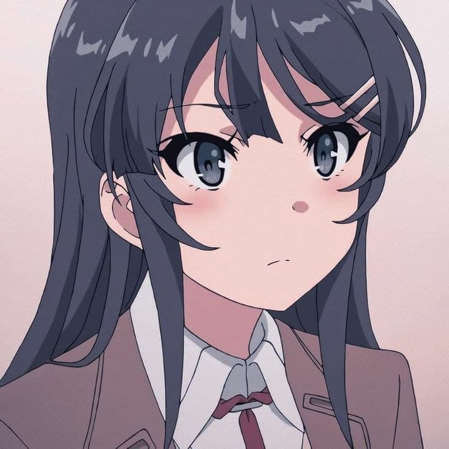
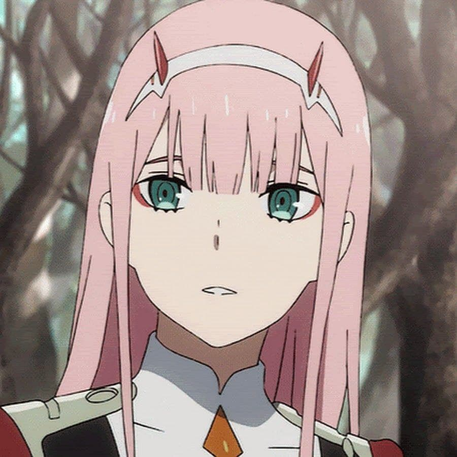

-
№1 Mai Sakurajima
Маи Сакурадзима - главная героиня аниме "Этот глупый свин не понимает мечту девочки-зайки". Красивая девушка с прямыми черными волосами до пояса и челкой, закрепленной заколкой в виде кролика с левой стороны. Её рост составляет около 163 см, что превышает рост обычной японской девушки. У неё большие фиолетовые глаза и довольно стройная фигура. Счетается самой красивой тянкой среди всех.

-
№2 Zero Two
Ноль Два - тоже очень красива тянка. Она из аниме: "Милый во Франксе". Ноль Два имеет длинные розовые волосы и пару красных рогов на голове. Глаза аквамаринового цвета, с розовой подводкой для глаз. У неё стройная и спортивная фигура.

-
№3 Hatsune Miku
Мику Хацунэ - японская виртуальная певица, созданная компанией Crypton Future Media 31 августа 2007 года. У неё худое телосложение, большие голубые глаза, длинные хвосты голубого цвета и футуристическая школьная форма, состоящая из рубашки без рукавов, нарукавников, заколок, галстука, юбки и чулков с обувью.
-
№4 Chika Fujiwara
Чики Фудживара - одна из главных героинь манги и аниме "Госпожа Кагуя: в любви как на войне". Чика — красивая молодая девушка с бледно-розовыми длинными волосами , бледной кожей и голубыми глазами. Она носит маленький чёрный бант поверх чёлки в середине волос. Она обычно одета в форму академии Сютин. Очень весёлая и энергичная девочка, любит веселится.
-
№5 Kaguya Shimomiya
Кагуя Синомия - глаяная героиня манги, ранобэ и аниме "Госпожа Кагуя: в любви как на войне". Кагуя — красивая молодая девушка с длинными чёрными волосами, белоснежной кожей, стройным телом и глазами красного цвета. Её волосы всегда ухожены и подвязаны красной ленточкой. Ленточка – это её попытка сделать прическу менее внушительной и более милой.